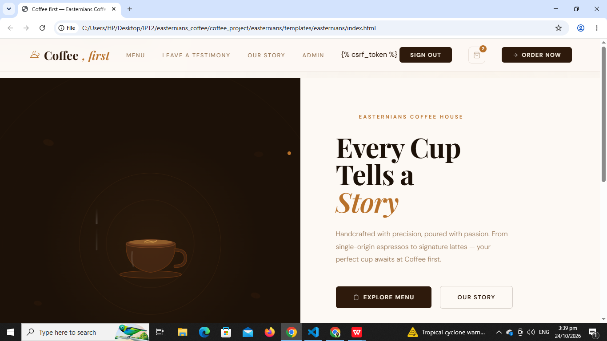

Coffe, first
Coffee First is an online ordering website designed to help small coffee shop businesses manage customer orders more efficiently.
Role: Front-end Developer, Back-end Developer, and UI/UX Designer
View ScreenshotBS Information Technology, 4th Year
Aspiring IT student passionate about web development, UI/UX design, and creating practical digital solutions. I enjoy learning new technologies and continuously improving my skills.
My name is Annalyn E. Carali, and I am a fourth-year Bachelor of Science in Information Technology student at Cebu Eastern College, Inc. I enjoy learning about technology and software development and using what I learn to solve real-world problems. Throughout my academic journey, I have gained experience in web and mobile application development, UI/UX design, and working with a team on different projects.
Beyond my studies, I actively volunteer in our church community, where I help organize events, support participants, and create social media content. During my free time, I enjoy hiking because it allows me to appreciate nature, stay active, and challenge myself. I also enjoy cooking for my family, as it is one way I show my care and contribute at home. These experiences have helped me develop valuable qualities such as leadership, communication, teamwork, adaptability, and time management.
As I prepare to begin my career in the IT industry, I look forward to gaining practical experience, expanding my technical knowledge, and learning from industry professionals. I am committed to continuous growth and hope to make meaningful contributions while developing into a skilled and dependable IT professional.
My current technical and personal skills.
These are some of the projects I have completed during my studies and personal practice.

Coffee First is an online ordering website designed to help small coffee shop businesses manage customer orders more efficiently.
Role: Front-end Developer, Back-end Developer, and UI/UX Designer
View ScreenshotSafetyPulse is a mobile application designed for construction site administrators and safety officers to monitor workers' vital signs and detect fall incidents through wearable technology.
Role: UI/UX Designer
View ScreenshotI'm always open to internship opportunities, collaborations, and new learning experiences.